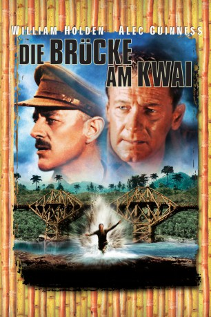
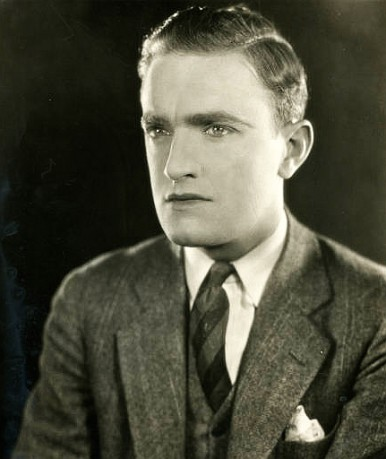

#1675 Die Brücke am Kwai
Alternativ: The Bridge on the River Kwai
Auszeichnungen: 7 Oscars gewonnen für 1 Oscars nominiert 3 GoldenGlobes gewonnen 4 BAFTA-Awards gewonnen
 
 IMDB-Wertung: 8.2 / 10
IMDB-Wertung: 8.2 / 10  IMDB-TOP-Platzierung: 142
IMDB-TOP-Platzierung: 142  Metascore: 87
Metascore: 87 
Britische Kriegsgefangene der Japaner und ihr Kommandant, Colonel Nicholson werden gezwungen, eine Eisenbahnbrücke über den River Kwai zu bauen. Gegen die unmenschliche Behandlung durch den brutalen Colonel Saito setzt Nicholson außergewöhnlichen Mut und Einfallsreichtum. Die Brücke wird für ihn und seine Soldaten zum Symbol des Widerstandes und Überlebenswillens. Zwischenzeitlich hat das britische Oberkommando einen Kommandotrupp beauftragt, diese Lebensader des Feindes zu zerstören.
Jahr: 1957
Dauer: 161 Minuten
FSK: 12
Land: England Studio: Columbia Film-VerleihTonspuren: DTS - ,
Untertitel: Deutsch,
Auflösung: 1080p (1920x760) Größe: 13516 MB
Genre: Abenteuer, Drama, Krieg
Regisseur: David Lean
Drehbuch: Pierre Boulle, Carl Foreman, Michael Wilson
Soundtrack: Malcolm Arnold
Darsteller:
 William Holden als Shears
William Holden als Shears Alec Guinness als Colonel Nicholson
Alec Guinness als Colonel Nicholson Jack Hawkins als Major Warden
Jack Hawkins als Major Warden- Sessue Hayakawa als Colonel Saito
- James Donald als Major Clipton
 André Morell als Colonel Green
André Morell als Colonel Green Percy Herbert als Grogan
Percy Herbert als Grogan- Ann Sears als Nurse
- Geoffrey Horne als Lieutenant Joyce
- Peter Williams als Captain Reeves
- John Boxer als Major Hughes
-  Harold Goodwin als Baker
- Heihachirô Ôkawa als Captain Kanematsu
- Keiichirô Katsumoto als Lieutenant Miura , as K. Katsumoto
- M.R.B. Chakrabandhu als Yai
- Vilaiwan Seeboonreaung als Siamese Girl
- Ngamta Suphaphongs als Siamese Girl
- Javanart Punynchoti als Siamese Girl
- Kannikar Dowklee als Siamese Girl
Datei: X:\1950-1959\Brücke am Kwai, Die (1957, FSK12, 1920x760).mkv seit 05.08.2015
Festplatte: HD 1900-1970
 Es gibt insgesamt 141 Filme in der Gruppe '1950-1959'
Es gibt insgesamt 141 Filme in der Gruppe '1950-1959'